와이어프레임 방식 시험: 원형 마네킹(부위색) → 직업 입히기. PixelLab usage 18 · ComfyUI 10장 · 2026-10-15
｜ 배율
요지
목표: 기존 직업 8종을 통짜 스프라이트 시트로. 포즈는 PixelLab, 나머지는 아낀다 (스펙 계열 상한 90회, 목표 40~60).
와이어프레임 방식(로드맵 지시): 직업색·장식 없는 무기 원형별 마네킹의 동작만 PixelLab 으로 뽑고, 프레임마다 직업 옷·투구·소품·색을 입힌다 (ComfyUI·코드, 무료).
마네킹은 부위마다 다른 색(아래 범례)이라, 동작 뒤에도 프레임마다 부위를 다시 가를 수 있다. 이 색 지도가 입히기의 밑그림이다.
결과: 1차 시트 8종은 검수 미달로 껐다(★). 몸·팔을 움직이려고 스켈레톤 애니를 시험했다(◆). PixelLab 계열 합계 usage 18.
✔ 검수 합격 기준 그림 (2026-10-17) — 컨셉 새 디자인 → PixelLab 정리 → 도트 검수
흐름: 컨셉만 보고 ComfyUI 로 새로 그림(3등신 마네킹 비율판) → 비평으로 후보 순위 → PixelLab image-to-pixelart 256→64 (직업당 1회) → 손질(dev/sheets-common/polish.py) → 검수 시트(qa.py --kind char) + 블라인드 비평(dev/pixel-qa/critic.md). 합격선: 모든 항목 3 이상 · 평균 3.5.
목표 문장에 사용자 지적 "뭉개짐 현상이 심하다"를 넣었다.
2차 4종 나란히 — 컬러 · 흑백 · 실루엣 (4배, 게임 안 키 46px)
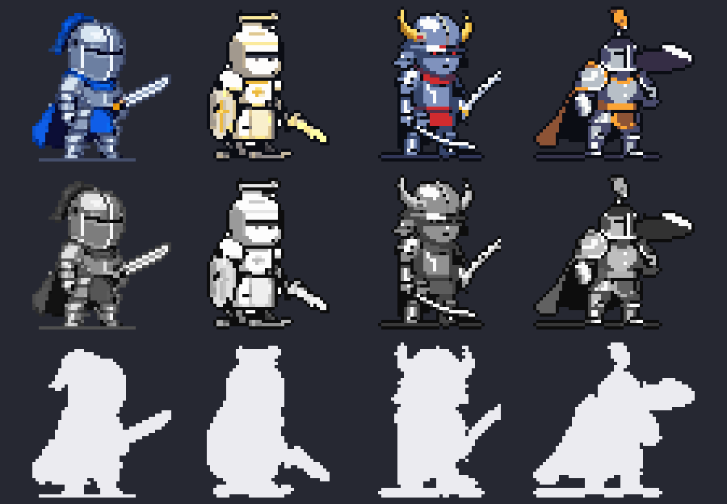
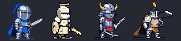
1배 (실제 도트 크기)
직업
그림
만든 길
검수 (의도·읽힘·깔끔·명암·도트·움직임·규칙 → 평균)
검사
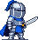
ComfyUI N2-23 → PixelLab 변환 → 정리
A 4·4·3·4·3·5·4 → 3.86 · B 4·4·3·4·3·5·4 → 3.86
성기사
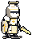
ComfyUI N2-51 → PixelLab 변환 → 면갑 스크립트 → fix_paladin_gold.py (방패 금 십자가·방패 면 크림·가슴 금 문장·어깨 금띠)
A 4·3·4·3·3·5·4 → 3.71 · B 3·3·4·3·3·5·4 → 3.57
검성 (재디자인 14차)
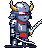
ComfyUI N7-77 (흰 가면) 46칸 축소 → fix_bm_eye.py (빨간 눈 틈·왼손 칼 정리·등 뒤 밝힘·판 테두리·다리 줄무늬) — PixelLab 변환본은 3.17 이라 버림
평균은 critic.md 대로 7항목(한 장 그림은 움직임 5). 검성·대검전사는 같은 그림의 판정이 흔들려서 독립 비평 2개가 모두 합격일 때만 합격으로 쳤다. 4종 모두 독립 비평 2개 합격. 남은 흠(비평 공통): 성기사 흰 몸통·방패 밝기가 붙음·어깨 금 약함, 검사 하체 판금이 잘게 쪼개짐·43색, 검성 칼이 곧아 곡도 휨이 약함·손이 작음, 대검전사 칼날과 가슴판 밝기가 붙음 — 관절 애니 단계에서 무기 덧그리기로 다룰 수 있다.
방법: 첫 프레임 = 8단계 "다리 드러난 중립 서기"(192칸에 2배). 직업마다 중립 그림의 키·발에서 관절 8프레임(보폭 ±6.5칸·무릎 3.5칸 들기)을 잡아 animate-with-skeleton-v3 1회(usage 3). 후처리(skel_walk.py post): 2배 최빈색으로 64칸 → 엉덩이 3줄 아래·발 중심 ±10칸만 생성 다리, 나머지(상체·무기·방패)는 중립 그림 고정 → 접지·통과 4프레임 [2,4,6,0].
합격(독립 비평 2개 모두): 성기사 3.86/3.86 · 견습 3.86/3.86 · 성좌기사 3.86/3.86 → 시트 walk 줄 교체. 남은 흠: 통과 프레임에서 두 다리가 겹쳐 뭉침, 무릎 들기 약함.
미달: 파천검왕 3.29/3.14 → 무료 수리(다리 색을 중립 하체 색으로 고정·생성 망토 빼기) 후 3.43/3.29. 검신 3.57/3.00 → 무료 수리(같은 색 고정·벌어진 프레임 [2,3,6,7]) 후 3.43/3.57. 둘 다 다리가 어두운 한 덩어리로 읽혀 움직임 2~3 → 임시 걷기 유지.
게임에서 보기: dev/skills.html?mode=basic&cls=paladin&sheetsOn=paladin,squire,archon (직업 버튼으로 전환). SHEET_ON 은 손대지 않음(검신 false).
게임에서 보기: dev/skills.html?mode=basic&cls=swordsaint&sheetsOn=swordsaint. 검신 SHEET_ON 은 false.
검신 디자인 합격 S2-77 3.86 / 3.86 (어두운 남색 갑옷 + 흰 머리·스카프, 큰 금 초승달 투구, 보이는 얼굴, 넓은 하카마 — 검성 대비 IoU 0.58). 1라운드 S1 4장 미달 → 2라운드에서 "강청색 판금 하이라이트·큰 밝은 뿔·큰 얼굴·스카프는 뒤로만" 으로 통과. PixelLab 변환본은 외톨이 점이 늘어 버림.
검신 동작 미달(시트엔 짧은 판): 키 자세 10 → 준비 그림 비례 불일치·칼 떠 있음·이중 칼날로 2.71~3.0 → 짧은 판(준비 = key4, 떠 있는 자세 뺌) 평타 3.43/3.43, 시전 3.29/3.29. 걷기 미달 → 임시 걷기.
걷기 재도전 4종(다리만·무기 고정, 직업당 최대 4): 성기사 3.71/3.71(움직임 2, 칼 튐) → 마지막 1 재편집 후 3.0 미달, 견습 3.57/3.29 → 통과 자세 추가 후 2.71 미달, 성좌기사 3.14/3.71(투구 명암 깜빡임), 파천검왕 2.43/2.43(홀짝 프레임 망토·명암 다름). 4종 모두 임시 걷기 유지.
게임에서 보기: dev/skills.html?mode=basic&cls=archon&sheetsOn=squire,archon,tyrant (직업 버튼으로 전환). 7종 시트 실림(heroTop 71~74). 새 3종 SHEET_ON 은 false.
디자인(ComfyUI, sonnet 비평 2개): 견습 기사 T3-11 3.86/4.14, 성좌기사 T3c-63 4.14/3.71, 파천검왕 T3b-77 3.71/3.71 합격. 검신 미달 — 7라운드(T3~T3e + PixelLab 변환 1): 얼굴 없는 흰/어두운 덩어리·검성과 같은 틀·뿔/곡도가 46칸에서 안 읽힘 → 계획서 멈춤 조건대로 애니 안 만듦(10 절약).
걷기 재도전("다리만, 무기·투구 고정" 문구): 검성 3.86/4.0, 대검전사 3.86/3.86 합격 → 시트 반영. 성기사 3.43/3.71 미달 → 임시 걷기 유지. 새 3종 걷기도 다리가 거의 안 움직여 미달 → 임시 걷기.
새 3종 평타·시전: 성좌기사 시전 3.71/3.86 합격. 미달(최종 판): 견습 평타 3.43/3.57·시전 3.43/3.57(준비 프레임 손이 비어 보임·얼굴 앞 세우기 없음), 파천검왕 평타 3.43/3.43(프레임 간 명암 튐), 파천검왕 시전 짧은 판(2~4 같은 그림 → 4f), 성좌기사 평타 짧은 판(좌우 뒤집힌 젖힘 프레임 뺌 → 5f). 예비 재편집 5 + 변환 1 사용.
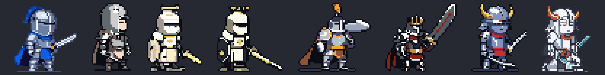
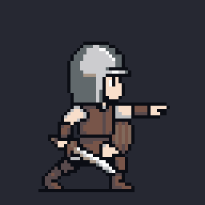
견습 평타(미달)견습 시전(미달)
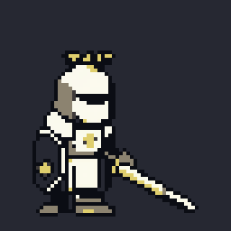
성좌기사 평타(짧은 판)성좌기사 시전 ✔
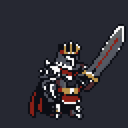
파천검왕 평타(미달)파천검왕 시전(짧은 판)
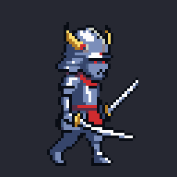
검성 걷기 ✔
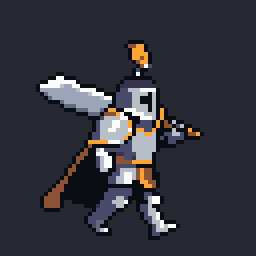
대검전사 걷기 ✔
◆ 4단계 — 걷기 + 대검전사 평타 재편집 (2026-10-18, pixen 14)
대검전사 평타 합격 3.71 / 3.57: 내려찍기를 두 번 다시 편집(key3b: 칼이 뒤로 끌림 3.43/3.57 미달 → key3c: "칼끝 오른쪽 앞아래" 명시). 흠: 머리 위 프레임 칼이 가늘어짐, 3→4 사이 중간 자세 없음, 4번 몸이 정면 쪽.
걷기(직업당 키 3): 검사 합격 3.86 / 3.86. 성기사 3.0/3.0, 검성 2.71/3.0, 대검전사 3.86/3.0 미달 — 프레임마다 무기 구성·투구·방패가 바뀌고(칼이 두 자루로 보임 등) 두 자세 반복이라 걸음이 약함. 대안대로 이 셋은 시트에서 임시 걷기(디자인 고정, 들썩임만)로 되돌림(띠는 anim/*-walk-rejected-strip.png).
사용 14(대검전사 2 + 걷기 12), 계열 누적 84/90. 시트 4종 다시 조립·meta 다시 묶음, ?sheetsOn= 로 4종 확인(walk 4f·atkA 7f, heroTop 71~74).
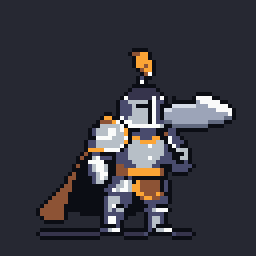
대검전사 평타 (key3c)
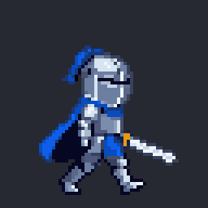
검사 걷기
▣ 계획 — 견습 기사·성좌기사·검신·파천검왕 (PixelLab 0, 로드맵 요청)
디자인은 ComfyUI(무료): 견습 기사 = 검사 그림 init 색 바꿈(가죽·천, 투구 없는 소년 + 짧은 검·나무 방패). 3차 = 2차 확정 그림 init + 특징 잇기 — 성좌기사(후광 → 별자리 고리·별빛 망토), 검신(금 뿔 → 큰 뿔·흰 하오리·빛나는 곡도), 파천검왕(주황 볏 → 왕관 투구·붉은 망토·더 큰 대검). 검수 2개 + 같은 계열 나란히·실루엣 IoU.
PixelLab 직업당 10~12 (기준 0~1 + 평타 4 + 시전 3 + 걷기 3 + 여유 1), 4종 40~48. 이번 달 남은 6 으로는 시작하지 않음 → 다음 달 초기화분 또는 상한 증액(+40~48, 사용자 결정).
게임에서 보기: dev/skills.html?mode=basic&cls=paladin&sheetsOn=paladin,swordsman,blademaster,greatswordsman (직업 버튼으로 바꿈, 평타·스킬 재생). 오프라인 게임은 index.html?server=http://127.0.0.1:9&sheetsOn=paladin,swordsman,blademaster,greatswordsman. SHEET_ON 은 그대로 false.
시트(build_sheets.py → src/sprites/<직업>.png/.json, 64칸, 발 (28,59)): idle 2f(1칸 웅크림 들썩임) · walk 4f(임시 — 들썩임만, 걷기 애니 없음) · atkA 7f(평타 + 복귀 보간 1f: 준비 그림의 엉덩이 줄을 빼 1칸 웅크림) · cast 6f · hurt 2f(뒤로 밀림). 대검전사 칼날은 fix_gs15.py 로 강철색으로 밝힘.
검수(sonnet 비평 2개): 검성 평타 4.0 / 3.86, 검성 시전 4.0 / 3.57, 대검전사 시전 3.57 / 3.57 합격. 대검전사 평타 미달: 내려찍기(key3)는 칼끝이 떨어져 보여 3.43 / 3.29 → 스크립트로 조각 지우기 실패(칼날 판이 지워짐) → 대안 "좋은 프레임만": 타격 자리에 시전 3번(앞으로 뻗음) → 3.71 / 3.29 (타격 칼이 가늘고 짧아짐, 견갑·팔이 안 보임, 머리 위→앞 사이 호 없음). 시트에는 이 짧은 판이 들어가 있다.
못 한 것: 성기사 평타 칼 길이 통일·후광-칼자루 겹침(스크립트로 깔끔히 안 됨), 걷기 애니.
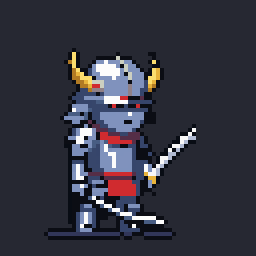
검성 평타검성 시전대검전사 평타 (4단계 key3c 로 갱신, 합격)대검전사 시전
조립한 시트 4종 (2배)
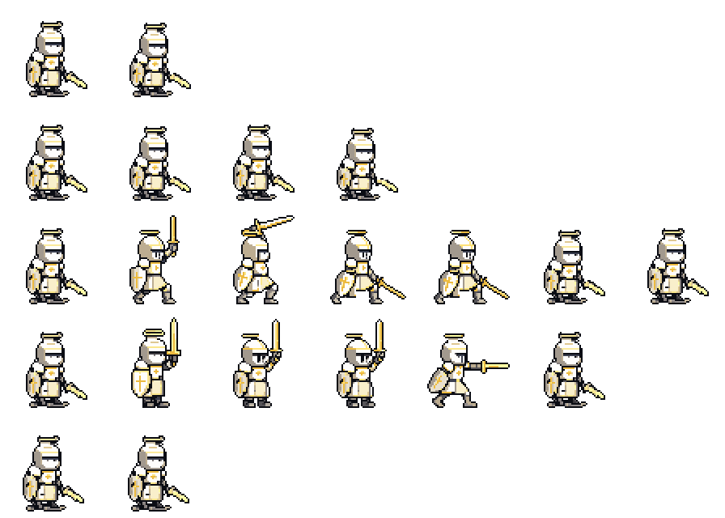
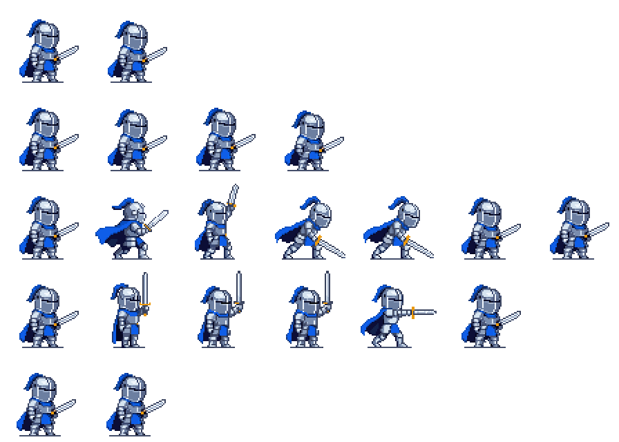
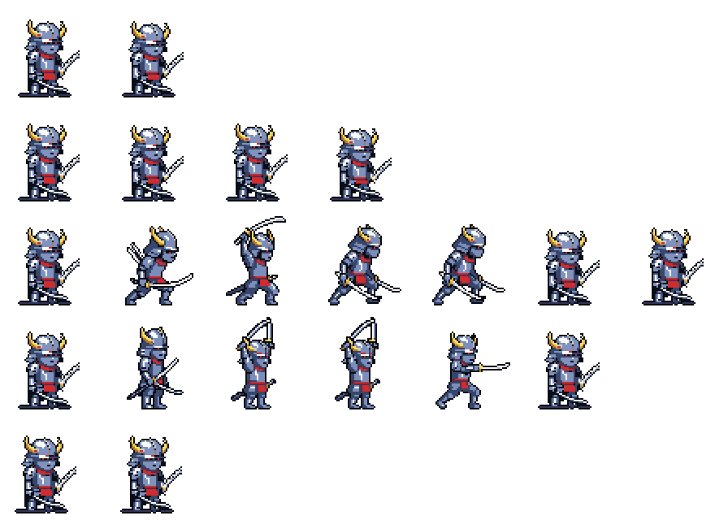
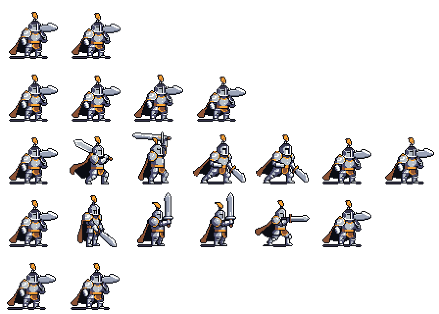
✔ 검성·대검전사 재디자인 합격 (2026-10-18) — 4종 나란히는 맨 위 ✔ 절 그림이 갱신됨
검성fix-blademaster-n14.png: 14차(검사 N2-23 init 의 파랑→진홍, denoise 0.86) 97번 → fix_bm14.py (뿔 금색 3단, 검사에서 넘어온 망토 지움, 앞손 카타나를 앞위로 치켜든 2칸 곡도로, 아래 칼 날등). 비평 3.71 / 4.0. 실루엣 IoU(검사 대비, 발 기준) 0.673 — 로드맵 목표 0.6 은 못 맞춤(성기사 0.644, 예전 검성 7차도 0.657: 46px 치비는 몸통이 대부분이라 0.6 아래가 어렵다). 비평 둘 다 "뿔·곡도·붉은 띠로 색깔놀이 아님".
대검전사final-greatswordsman-n15.png: 15차 — init 을 스크립트로 바꿈(검사 그림에서 깃털·장검 지우고 손에서 머리 뒤로 넘어가는 넓은 대검을 바탕 칸에 그림 + 파랑→주황), denoise 0.86 → 37번 축소 그대로. 비평 3.57 / 3.86, IoU 0.558. 흠: 대검 날이 어두워 몸과 붙음, 쥔 손이 불분명, 면갑이 정면에 가까움.
각 6프레임. 확정 그림을 edit-image-pixen 으로 키 자세 편집(성기사 시전 3+재편집 1, 검사 평타 4, 검사 시전 3+재편집 1 = 12, 승인 13 안) → anim_build.py: 발 줄 맞춤, 확정 그림 팔레트 고정(검사는 43색 → 22색), 성기사 cast1 은 pixen 이 왼쪽을 보게 그려 좌우 반전.
검사 평타는 skeleton 대신 키 자세로 바로 갔다(성기사에서 skeleton 2번 미달·키 자세 합격, skeleton 은 중립 편집 1 + 실패 시 대체 4 가 더 들어 13 을 넘을 수 있음).
검수(sonnet 비평 2개, 7항목 평균): 성기사 시전 3.86 / 3.86 · 검사 평타 3.71 / 3.86 · 검사 시전 3.86 / 3.86 — 모두 합격. 공통 흠: 2~4번 변화가 작음(움직임 3), 마지막 프레임 복귀가 한 번에 튐, 검사 평타 2번 젖힘이 앞쪽.
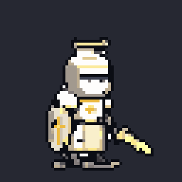
성기사 시전
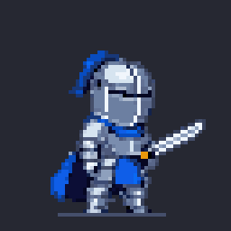
검사 평타검사 시전
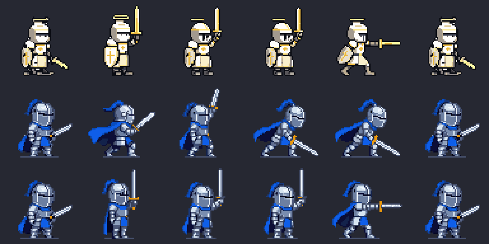
✔ 성기사 평타 합격 — pixen 키 자세 + 스크립트 (2026-10-17)
흐름: 확정 그림(칼 든 성기사)을 edit-image-pixen 으로 키 자세 편집(B 4 + C 3, 각 usage 1) → 발 줄 맞춤·확정 그림 팔레트 고정 → 6프레임 [준비, 수직으로 들기, 앞위로 넘기며 웅크림, 내딛어 내려벰, 유지, 준비] (120·110·70·70·160·140ms). 타격 프레임의 사라진 방패는 3번 프레임 방패를 옮겨 붙임(anim_keys.py, 있는 그림 옮기기).
검수: 4·4·4·4·4·움직임3·4 → 3.86 / 3·4·4·4·4·3·4 → 3.71, 둘 다 합격. 남은 흠: 칼 길이·색이 프레임마다 조금 다름, 3번 후광이 칼자루와 겹침, 백스윙이 약함, 타격→준비 복귀가 한 번에 튐.
skeleton-v3 는 성기사에서 두 번 미달(몸이 안 움직이거나 칼 궤적·방패가 무너짐). 방패에 관절이 없어서로 보인다.
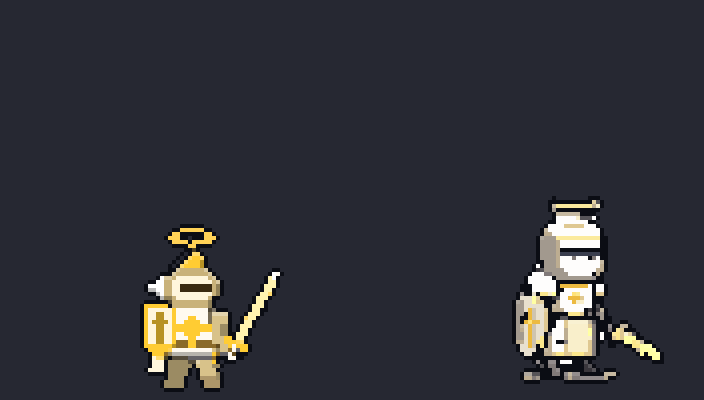
왼쪽 = 이전 마네킹판 평타(96칸 4f), 오른쪽 = 새 평타(64칸 6f), 같은 도트 배율 4배
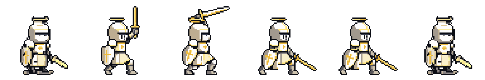
✖ 관절 애니 A·B 결과 — 성기사 평타 (2026-10-17, PixelLab A 4 + B 4)
A skeleton-v3 15f (4): 캐릭터를 192칸에 2배(키 약 98)로, 몸 이동 2배, 칼·잔상 금지 문구, 방패 손 고정. → 몸·무릎은 움직였으나 칼 젖힘→내려베기 궤적이 찌르기처럼 끊기고 방패가 회색 덩어리·칼 손 쪽으로 넘어감. 비평 2.57 · 2.57 다시.
B pixen 키 자세 4 (각 usage 1.0): 칼 든 확정 그림을 젖힘·머리 위·타격·마무리로 편집 → 발 줄 맞춤·팔레트 고정 → 6프레임. 몸 전체 동작·타격 연기는 좋음. 하지만 4·5번(타격)에서 방패 모양·투구 색·팔 색이 바뀌고, 2번 칼 각도가 앞쪽이라 젖힘으로 안 읽히고, 칼 길이가 프레임마다 다름. 비평 3.43(수리) · 3.14(다시, 움직임 2) → 미달.
계열 누적 PixelLab 41 (상한 90). 승인분 다 씀 → 멈추고 보고.
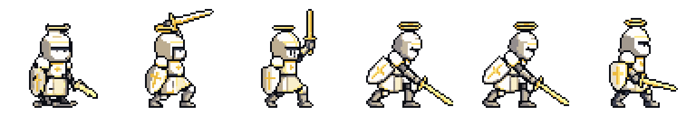
B 6프레임 (3배)B 재생 4배
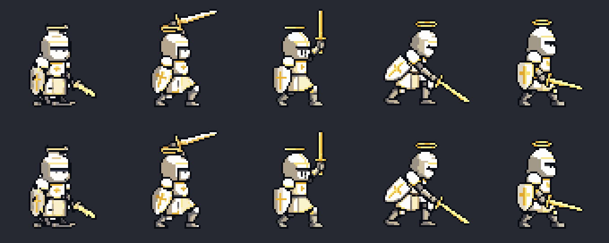
B pixen 키 자세 (위·아래 = 같은 호출의 두 결과)
A (2배 배치) 막대 인형·원본·후처리
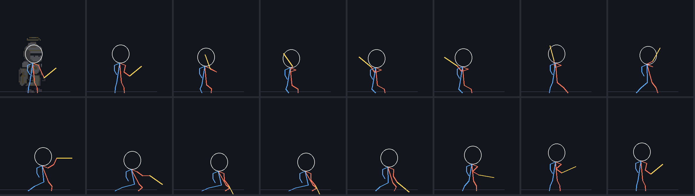
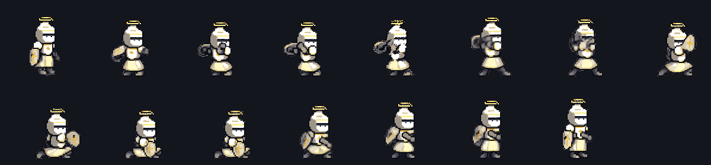
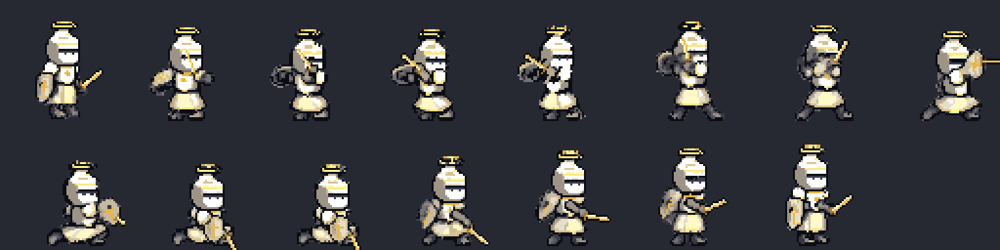
▣ 검성·대검전사 재디자인 진행 (검사 N2 와 같은 밑그림·문체, 검사·성기사와 나란히 검수)
검성 9차: 금 초승달 뿔·쌍곡도는 좋으나 어두운 남색 덩어리·얼굴 없음·3/4 시점 → 97번 3.71 / 2.71 갈림(불합격). 대검전사 9차·12차: 은색 판금+깃털 투구라 검사와 같은 실루엣(색깔놀이) / 10차: 정면 얼굴·검정 덩어리 / 11차: 옆모습은 됐으나 큰 맨얼굴·디테일 적음. 모델이 "판금 기사"를 그리면 검사처럼 되고, 다르게 하면 디테일이 빠지는 문제.
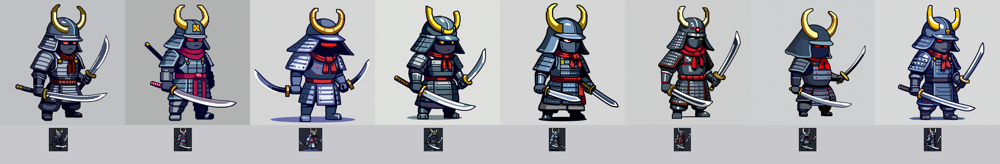
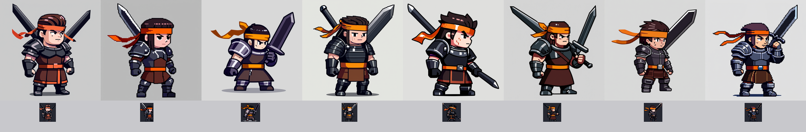
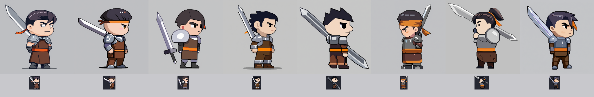
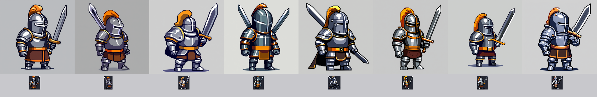
13차: 검사 N2-23 그림을 init 으로 denoise 0.68 → 검사가 그대로 나옴. 14차: init 의 파랑을 직업 색으로 바꾸고 denoise 0.80(앞 4)/0.86(뒤 4) → 검성 0.86 쪽에서 금 뿔 투구·카타나·검사와 같은 밀도가 나옴(흑백 실루엣 IoU 검사 대비 63번 0.547 · 77번 0.661 · 97번 0.692, 성기사 0.644). 대검전사는 여전히 색만 바뀐 검사.
중립 첫 프레임(pixen 1, usage 1.0): 칼이 사라지고 오른팔을 내린 대기 자세로 바뀌었다. 투구·후광·방패·가슴 문장은 유지. 키가 47→52 로 커져 정강이 3줄을 스크립트로 빼서 49 로 맞춤.
skeleton-v3 15f(usage 4.0): 팔은 관절을 어느 정도 따랐지만(웅크림·머리 뒤로) 몸통·다리가 거의 그대로(앞발 디딤·상체 숙임 없음). 모델이 칼과 회색 잔상 덩어리를 스스로 그렸고(10·11번), 방패가 등 뒤·가슴 앞으로 옮겨 다님(3~9번).
검수(qa.py --frames 15 + 비평): 2·3·2·3·3·움직임 2·3 → 평균 2.57 다시. 승인 조건대로 2단계는 하지 않았다.
원인 추정: ① 동작 글("sword slash")·설명에 칼·잔상 금지가 없어 모델이 칼과 스미어를 그림 ② 캐릭터가 192 칸에서 150px 를 차지해 몸 이동(목 7~20px)이 상대적으로 작음 — 성공했던 2026-10-16 시험은 캐릭터가 192 칸의 1/3 남짓이었다 ③ 방패는 관절이 없어 왼팔 관절을 따라 떠다님.
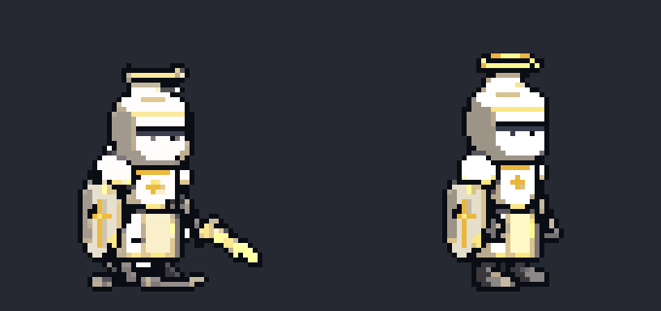
확정 그림 → pixen 중립 대기(정강이 3줄 뺌)
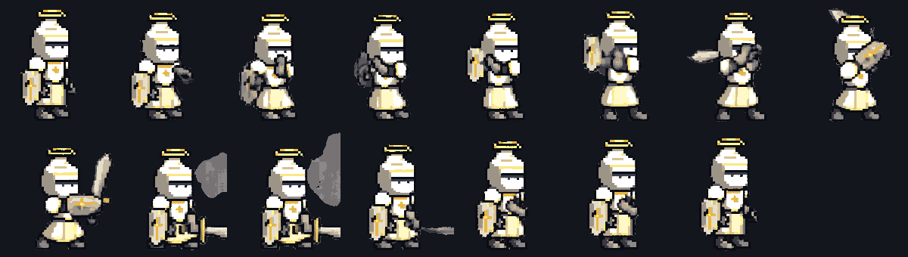
skeleton-v3 192칸 원본 15프레임
64칸 축소·팔레트 고정·성검 덧그림 (3배)재생 4배
◆ 관절 애니 계획 (검사·성기사 확정분, 로드맵 승인 대기) — 2단계: 성기사 평타 먼저
1단계 (성기사 평타 1개): ① edit-image-pixen 1회 — 확정 그림(fix-paladin.png)을 64칸 캔버스에 놓고 "팔 내린 중립 대기·오른손 빈손·칼 없음, 방패는 왼팔"로 편집 (레인저 교훈: 첫 프레임이 칼을 겨눈 자세면 팔이 관절을 안 따름). ② animate-with-skeleton-v3 192칸 15프레임 1회 — 중립 그림 3배 + 아래 관절. ③ 3칸 최빈색으로 64칸, 확정 그림 팔레트 고정, 손목 좌표에 성검 덧그리기(wpn.py), qa.py --kind char --frames 15 + 비평 2개(움직임 포함).
값 근거: pixen = 공개 명세 "Cost: 1 generation" (복서 계열 옛 기록에 7~12 가 있어 응답 usage 가 1을 넘으면 그 자리에서 멈추고 보고). skeleton-v3 15f = 4 (명세, 크기 무관 · 레인저 8f 실측 3). 1단계 최대 5, 재시도 0.
손 위치 역산: 프레임마다 칼 손 목표를 정하고 위팔 16·아래팔 15(192 기준)로 팔꿈치를 역산(anim_plan.pyik, 레인저 skelgen.py 와 같은 식). 3등신이라 팔이 머리 위로 못 넘어가서, 들어올림은 손을 머리 옆·뒤 어깨 높이에 두고 칼날이 위·뒤로 솟게 했다.
실패 시: 몸·팔이 관절을 안 따르면 다시 부르지 않고 원인(첫 프레임·관절)을 보고. pixen 이 디자인을 바꾸면(투구·방패 모양) 그 결과는 버리고 보고 — skeleton 은 부르지 않음(최대 1만 씀).
막대 인형 재생 (70ms/프레임). 첫 칸 = 확정 그림 위 중립 관절. 준비 → 웅크림 → 머리 뒤로 젖힘 → 앞발 디딤 → 휘두름 → 타격(상체 숙임) → 끝까지 → 회수
▣ 뭉개짐 잡기 — 검사·성기사 3단 비교 + 검성·대검전사 재시안 (2026-10-17, PixelLab 2)
뭉개짐 원인: ComfyUI(Z-Image 픽셀 LoRA)가 그리는 도트 한 칸이 1024px 그림에서 6~7px, 즉 키 약 120칸짜리 고해상 도트다. 이걸 키 46px 로 줄이면 2.6배 압축이라 갑옷 이음새·명암이 한 칸에 섞여 덩어리가 된다 (줄이는 방식 — 칸마다 최빈색 — 의 문제가 아니라 디테일 밀도가 안 맞음).
해결: 46칸에 맞춰 다시 그리는 단계가 필요하다 → PixelLab image-to-pixelart (256 입력 → 64 출력, 원본 충실 모드) 가 이 일을 한다. 그 뒤 손질(14색 · 외톨이 점 정리 · 바깥 1px 외곽선 · 위 가장자리 하이라이트, dev/sheets-sword/polish.py).
왼쪽부터 ① ComfyUI 축소본 · ② PixelLab 정리본 · ③ 정리본 + 손질 (4배)
게임 화면 (화면 2배): 검사 ①②③ · 성기사 ①②③
관찰: ② 에서 검사 얼굴·투구, 성기사 방패·칼의 도트 덩어리가 정돈되어 흐림이 풀렸다. ③ 은 외곽선이 생겨 어두운 바탕에서 떠 보인다. PixelLab 응답 usage 각 1 (합 2, 계열 합계 20).
검성 · 대검전사 재시안 (ComfyUI, 검사 B2-11 원본을 밑그림으로 — 같은 비율·밝기)
지금 스프라이트를 밑그림으로 하면 프롬프트를 바꿔도 예전처럼 검은 덩어리·실사 비율로 돌아가서, 형태가 좋은 검사 원본을 밑그림(denoise 0.88)으로 직업만 바꿔 그렸다.
▣ 확정 방향 B(3등신)·키 1.3배 — 2차 4종 기준 그림 후보 (ComfyUI, PixelLab 0회)
사용자 확정 (2026-10-16): 그림체 B, 게임 안 키 1.3배(약 46px). 검사 계열이 그림체 기준이다. 아래는 ComfyUI 시안을 키 46px 로 줄인 것 — 이것을 PixelLab image-to-pixelart 로 정리해 기준 그림으로 쓴다 (계획서 승인 대기).
관찰: 네 직업 실루엣이 파란 볏 기사 · 후광 방패 · 뿔 투구 쌍검 · 어깨에 멘 대검으로 뚜렷이 갈린다. 검성·대검전사는 어두운 배경에서 조금 묻힌다 → 정리 때 밝은 테두리·명암을 올린다. 검성은 칼을 한 자루만 들었지만 쌍검은 덧그리기로 얹는다.
▣ 디자인 시안 — 그림체 방향 A·B·C (2026-10-16, PixelLab 0회 · ComfyUI 48장)
사용자 지시 "저퀄리티 모델링 자체를 이쁘게 다시 그려보자, 모습이 바뀌어도 된다". 검사 계열이 그림체 기준을 먼저 정하고 다른 3계열이 따라간다.
만든 법: ComfyUI Z-Image + 픽셀 LoRA. 등신은 밑그림으로 강제 — 지금 스프라이트의 머리는 두고 목 아래만 세로로 늘린 그림(A ×1 · B ×1.5 · C ×2.1)을 denoise 0.82~0.85 로 다시 그림 (글로만 "3등신" 이라 쓰면 모델이 무시함). 1024px → 키 35·46·52px 로 줄이고(칸마다 최빈색) 20색 안팎·외곽선 #0b0d14.
지킨 것: 성기사 후광·십자 방패·크림 갑옷·금빛 칼 / 검사 파란 볏·파란 망토·은 갑옷·장검. 오른쪽 보는 옆모습.
이건 방향(비율·밀도) 고르기용 시안이다. 고른 방향은 PixelLab 으로 기준 그림을 정리한 뒤(계획서 따로) 관절 지정 애니로 동작을 만든다.
성기사
지금 게임 (64칸)A 2.5등신 (지금 비율) · 키 35B 3등신 · 키 35C 4등신 날렵 · 키 35
A · 키 46 (1.3배)A · 키 52 (1.5배)B · 키 46 (1.3배)B · 키 52 (1.5배)C · 키 46 (1.3배)C · 키 52 (1.5배)
게임 화면에 세운 모습 (화면 2배 확대 = 시트 1칸 3px, 맨 왼쪽은 지금 게임의 기사)
ComfyUI 원본 후보 전부 (줄: A · B · C, 칸: 시드 11 · 23 · 37 · 51)
A 2.5등신: 지금 비율과 같아 다른 직업·몬스터와 바로 어울린다. 키 35px 에서도 투구·방패·칼이 가장 또렷하다. 1.3배(46px)면 디테일이 확실히 산다.
B 3등신: 조금 더 멋있지만 35px 에서는 팔·칼이 가늘어 뭉개지기 시작한다 → 고르면 1.3배 이상 권장.
C 4등신: 35px 에서는 지저분하다(팔·다리 1~2칸). 1.5배(52px)도 아직 가늘다. 하단바 높이·몬스터 크기와도 덜 어울린다.
칸 크기: 키를 1.3배로 하면 동작 폭도 커져 "팔이 2~3px 라 동작이 작다" 문제가 줄어든다.
정할 것: ① 그림체 방향 A · B · C ② 게임 안 키 1배 · 1.3배 · 1.5배 (추천: A 또는 B, 키 1.3배)
◆ 시험: 몸·팔·칼이 같이 움직이게 — 성기사 내려베기 (2026-10-16)
세 판을 같은 크기로 비교 (모두 96칸 시트로 줄인 결과, 왼쪽 큰 GIF = 4배, 오른쪽 = 게임에 가까운 2배)
③ 기존: animate-with-text-v3, 96칸 4프레임 (usage 1)
A 스켈레톤: animate-with-skeleton-v3, 192칸 8프레임 (usage 3). 관절 시퀀스를 손으로 크게 과장해 설계했다(아래 막대 인형): 크게 젖혀 들기 → 앞발 디딤·머리 위 → 앞으로 → 상체 숙여 내려침 → 끝까지 → 회수 → 가드. 모델이 그린 가는 칼 선을 지우고 손목 좌표에 성검을 덧그렸다.
B 텍스트 개선판: animate-with-text-v3, 192칸 8프레임, 제약 문구·이펙트 단어를 뺀 큰 동작 설명 (usage 5 — 192칸은 값이 커진다)
③ 기존 (96칸 4f)A 스켈레톤 + 덧그리기B 텍스트 개선판
③ (게임 크기 근처)AB
프레임 띠
③
A
B
A 에 넣은 관절 시퀀스 (막대 인형: 주황 = 칼 든 앞팔·앞다리, 파랑 = 방패 팔·뒷다리, 노랑 = 덧그릴 칼 각도)
PixelLab 원본 (192칸, 가공 전)
A 원본 — 모델이 "오른손 비움"을 무시하고 가는 칼 선을 그림(후처리에서 지움)
B 원본 — 금빛 불꽃·회색 먼지 이펙트를 또 그림, 몸은 뻣뻣
관찰
A: 몸이 뒤로 젖혀졌다 앞으로 숙여지고, 팔이 머리 위까지 올라갔다 내려오며, 앞발을 디딘다. 칼이 손을 따라가서 "따로 노는" 느낌이 없다. 성기사 후광·방패·크림색 갑옷 유지.
A: 줄였을 때 1~2프레임은 팔이 몸과 겹쳐 덩어리처럼 보인다. 후광이 프레임마다 조금 흔들린다.
B: 큰 동작을 말해도 몸은 거의 그대로이고 칼 대신 이펙트(불꽃·먼지)가 커진다. 값도 192칸에서 5로 비싸다.
③: 팔 동작이 작고 칼이 가늘다 (96칸에 키 35px, 4프레임).
사용량 초과: 이번 시험 usage 8 (A 3 + B 5) — 승인 상한 5 를 3 넘었다. B 의 값을 2로 예상했지만 192칸 텍스트 애니는 5였다. 계열 합계 18 (상한 90).
★ 1차 시트 8종 — 검수 미달로 다시 끔 (몸·팔이 거의 안 움직이고 칼만 돎)
PixelLab 은 원형 마네킹의 몸(팔) 자세만 쓴다: 장검 걷기 8f · 내려베기 4f · 대기 4f · 가로베기 4f, 쌍검 2종, 대검 2종 (usage 합계 10). 칼은 PixelLab 이 잔상·이펙트로 뭉개서, 동작마다 칼 각도를 정해 직업 무기를 덧그렸다 (dev/sheets-sword/build.py SPEC).
칸: 장검·쌍검 96, 대검 128 (머리 위로 든 칼이 64·96 칸에서 잘려 키움). 발 기준점은 예전 조립식과 같은 땅(차이 0px).
guard = idle 윗몸 1칸 낮춤, hurt = 뒤로 밀기, death = 뒤로 넘어짐(회전), 앉기는 예전 조립식을 그대로 쓴다 (공용 규칙).
스킬 자세: cast 줄 6프레임에 칼 각도(-150°·-100°·-60°·-25°·10°·40°)를 적어 두고 스킬의 pose.wa 가 가장 가까운 프레임을 고른다.
끄기: 주소에 ?sheets=0 (전부) 또는 콘솔 SHEET_ON.paladin = false.
시트 전체 (줄: idle · guard · walk · atkA · atkB · cast · hurt · death)
— 아래는 진행 기록 (시범 0·1단계) —
① 기준 그림 — 지금 게임 대기 자세 (64칸, 발 = (32, 58))
검사 (장검)성기사 (성검·방패·후광)견습 기사 (참고)성좌기사 (참고, 3차)
게임의 drawHero 로 2배 캔버스에 그린 뒤 3px 칸 가운데 색을 집어 1px = 고해상 도트 1칸으로 복원했다. 장검·성검은 대기에서 64칸 안에 여유 있게 들어간다 (칼끝 위 여백 약 20px). 평타에서 칼을 머리 위로 들면 64칸 위로 넘칠 수 있어 PixelLab 은 96칸에 넣고 뽑은 뒤 다 들어가면 64칸으로 자른다.
② 무기 원형 마네킹 (PixelLab 첫 프레임으로 넣을 그림)
장검 원형 (64) — 견습·검사·성기사·성좌기사쌍검 원형 (64) — 검성·검신대검 원형 (96) — 대검전사·파천검왕
부위색 범례:
투구
몸통·팔
바지
장화
장갑(손)
칼날 · 외곽선 #0b0d14 장식 없는 검사 몸에 무기만 바꿔 끼워 그렸다 (망토 없음). 원래 그림의 밝기 3단을 부위 램프 3단으로 옮겨 명암은 남겼다.
③ 직업 입히기 — 정지 그림 (마네킹 → 직업)
방법 (dev/sheets-sword/dress.py): ① 마네킹 픽셀을 부위색으로 다시 가름 → ② 머리(투구+볏·후광·뿔)는 직업 그림에서 통째로 옮겨 마네킹 투구 아랫줄 가운데에 맞춤 →
③ 몸통은 직업 무늬를 몸 이동량만큼 옮기고, 못 덮은 칸(뻗은 팔 등)은 직업 부위 램프로 칠함 → ④ 방패(몸 앞)·망토(몸 뒤)는 리그에서 소품만 떼어 몸과 같이 옮김 →
⑤ 원래 직업 팔레트로 고정·외곽선 정리.
검사 지금→검사 입힘성기사 지금→성기사 입힘
견습 지금→견습 입힘성좌기사 지금→성좌기사 입힘
관찰
검사는 지금 그림과 거의 같다 (마네킹이 검사 몸이라 당연 — 입히기가 그림을 망가뜨리지 않는다는 확인).
성기사: 후광·볏 투구·십자 방패·가슴 문양·크림색 갑옷이 유지된다. 실루엣 보기로도 방패·후광이 그대로 보인다.
칼 모양은 원형(장검) 그대로라 성검의 손잡이 모양이 단순해진다 (색만 금빛). 필요하면 원형 칼 위에 직업 칼 그림을 각도 맞춰 덮는 단계를 더한다.
성좌기사(3차)는 방패 안 별 문양이 조금 뭉개진다. 3차는 스펙대로 2차 편집으로 장식을 더한다.
④ ComfyUI 다듬기 (Z-Image img2img → 팔레트 고정)
입힘 (다듬기 없음)denoise 0.25denoise 0.4검사 입힘0.250.4
정지 그림은 이미 깨끗해서 다듬기 차이가 거의 없다 (0.4 는 다리 명암이 조금 뭉개짐). ComfyUI 는 PixelLab 동작 프레임의 이음새·번진 픽셀 정리와 사이 프레임 채우기에 쓴다. 실루엣은 입힌 그림 그대로 잠근다.
⑤ 입히기 견고성 시험 — 움직이는 자세에서도 되나
주의: 이 줄의 마네킹 프레임은 PixelLab 결과가 아니라 지금 게임 리그로 그린 임시 평타 자세다 (사용자가 리그 포즈는 쓰지 않기로 했으므로 최종에는 쓰지 않는다). 몸이 기울고 팔·칼이 움직여도 머리·방패·후광이 제자리를 따라가는지만 본다.
마네킹(임시)
성기사 입힘
성좌기사 입힘
머리·후광·방패는 따라간다. 방패는 몸 이동만 따라가고 기울기는 따라가지 않는다 (PixelLab 프레임에서 몸이 크게 기울면 방패 각도가 어색할 수 있음 → 그때는 방패 덩어리를 투구 각도만큼 돌리는 단계를 더한다).
⑦ 1단계 결과 — 걷기 (PixelLab 1회, usage 2)
장검 마네킹 첫 프레임 → PixelLab animate-with-text-v3 8프레임(0 = 넣은 그림). 그 프레임마다 ③과 같은 방법으로 성기사·검사를 입혔다. 아래 GIF 는 칼이 수평으로 자리 잡은 3~8프레임 반복(10fps).
마네킹 (PixelLab)성기사 입힘검사 입힘
012345678
012345678
012345678
부위색이 9프레임 내내 유지돼 입히기가 그대로 된다. 후광·볏 투구·십자 방패·망토가 프레임마다 제자리를 따라간다.
다리가 번갈아 앞뒤로 나간다 (보폭은 작은 편).
칼이 0~2프레임에 비스듬히 든 자세에서 수평으로 내려가고 다시 올라오지 않는다 (예전 견습 시험과 같은 현상). 반복에는 3~8프레임만 쓰고, 대기 → 걷기 넘어갈 때 칼 각도가 바뀌는 것은 게임에서 짧게 섞는다.
투구 분류: 칼자루 끝 회색이 투구로 잡혀 머리가 발 쪽에 붙던 문제를 "가장 큰 회색 덩어리 = 투구" 로 고쳤다.
⑧ 무기 덧그리기 (사용자 결정, PixelLab 0회)
마네킹 칼은 지우고, 노란 장갑(손) 자리와 칼날 덩어리의 축 각도에 맞춰 원래 직업 무기 그림을 얹는다. 공용 모듈 dev/sheets-common/wpn.py 의 overlay 를 쓴다. 장검은 1~2칸 굵기라 한 장을 돌리면(RotSprite) 칼날이 점선으로 끊겨서, 게임 리그로 15° 간격 24장을 뽑은 각도 표(WeaponTable, 공용 모듈에 추가)에서 가장 가까운 각도를 돌리지 않고 얹는다. 손잡이 끝에서 2.5칸 위를 장갑 가운데에 맞춘다. 각도를 정해 주면 사이 프레임도 만든다.
⑨ 1단계 결과 — 평타 내려베기: ② 마네킹+입히기 vs ③ 직접 (PixelLab 각 1회, 4프레임 usage 1)
② 마네킹 + 입히기 + 덧그리기③ 성기사 직접 (PixelLab)
대기 (넣은 그림)들기베기 (수평)내려친 끝 *
대기 (넣은 그림)들기내려침회수
* 덧그리기로 만든 프레임: 4번 몸에 칼만 35° 아래로 얹었다 (마네킹 3번은 칼이 사라져 뺐다).
PixelLab 원본 (가공 전, 96칸)
마네킹 0마네킹 1마네킹 2마네킹 3마네킹 4
성기사 직접 0성기사 직접 1성기사 직접 2성기사 직접 3성기사 직접 4
관찰
② 마네킹 원본은 실패에 가깝다: 1번에서 몸이 정면으로 돌고 칼이 거대한 회색 덩어리(잔상)가 되며, 3·4번은 칼이 사라진다.
그래도 입히기(옆모습 머리·방패를 얹음) + 덧그리기(성검을 손·각도에 얹음)를 거치면 0·2·4번과 덧그린 1장으로 "들었다 앞으로 내려베기"가 읽힌다. 칼이 굵고 분명하다.
③ 직접은 옆모습·방패·후광이 끝까지 안정적이다. 1번은 빛 이펙트 덩어리라 뺐다.
③ 은 칼이 가늘고 작아 들어 올린 칼이 잘 안 보이고, 팔 동작이 작다. 덧그리기를 ③ 에도 쓰려면 직접 그림에서 칼을 찾아 지워야 한다 (마네킹처럼 칼날 색이 따로 있지 않아 어렵다).
ComfyUI 사이 프레임(③ 2·3번을 반씩 겹쳐 img2img, denoise 0.45·0.6)은 칼이 사라져 못 썼다. 사이 프레임은 덧그리기(각도 지정)로 만드는 편이 낫다.
⑩ 계열 나머지 계획 (다시 계산: 8프레임 = usage 2, 4프레임 = usage 1) — A 승인·완료
안
무엇
usage
A (추천) 원형 + 입히기 + 덧그리기
공용 마네킹 idle 4f (1) · 장검 원형 atkB 4f (1) · 쌍검 원형 atkA·atkB (2) · 대검 원형 atkA·atkB (2).
걷기는 이미 뽑은 장검 걷기에 쌍검·대검을 덧그리기 (0). cast = atkA 의 들기 프레임 + 이펙트(VFX 텍스처) (0). guard·hurt·death·sit 은 스펙대로 파생 (0).
견습·1차·3차 = 같은 원형 프레임에 그 직업을 입히기 (0).
6
B 2차 직접
성기사 atkB (1) · 검사 atkA·atkB (2) · 검성 (2) · 대검전사 (2) + 공용 idle (1). 견습·1차·3차는 2차 편집.
8
모두 4프레임·재시도 0. 이번 단계까지 쓴 4 를 더하면 계열 합계 A = 10, B = 12 (상한 90, 목표 40~60보다 훨씬 적음).
실패하면 다시 뽑지 않는다: 깨진 프레임은 빼고 덧그리기(각도 지정)로 사이·대체 프레임을 만든다. 몸이 정면으로 돌아도 머리·방패를 옆모습으로 얹어 가린다. 포즈 자체가 틀리면 멈추고 다시 묻는다.
쌍검은 뒷손 칼도 덧그려야 해서 장갑이 두 덩어리로 갈라지는지 원형 결과를 보고 판단한다.
⑥ PixelLab 1단계 계획 (완료) (승인 요청, 최대 3회)
#
무엇
첫 프레임
프레임
왜 PixelLab
1
장검 마네킹 walk (8프레임)
② 장검 원형, 96칸
8
팔·다리·칼이 함께 움직이는 새 포즈는 ComfyUI img2img 로 안 나온다 (낮은 denoise = 포즈 그대로, 높이면 몸이 무너짐). 리그 밑그림은 사용자 거부.
2
장검 마네킹 atkA (내려베기, 8프레임)
② 장검 원형, 96칸
8
3
성기사 직접 atkA (기준선)
① 성기사 지금 그림, 96칸
8
와이어프레임(1·2 + 입히기) 판과 같은 동작을 직접 판과 나란히 비교하려고. 이 1회로 "직접 vs 원형+입히기"를 정한다.
재시도 0회. 1회 = 응답 usage 1 (호출 한 번에 동작 전체 8프레임).
실패하면 다시 뽑지 않는다: 정면으로 돌거나 깨진 프레임은 버리고, 남은 키 프레임 사이를 ComfyUI img2img(기준 그림 고정)로 채운다. 부위색 번짐은 가장 가까운 부위색으로 다시 가르고 손 픽셀 수정. 칼끝 잘림은 96칸이라 거의 없음. 포즈 자체가 틀리면(베기가 아님) 그 동작은 멈추고 다시 묻는다.
1단계가 통과하면 계열 전체 예상: 공용 idle·walk 2 + 장검 atkA·atkB·cast 3 + 쌍검 3 + 대검 3 = 약 11~13회 (8직업 × 5동작 직접 = 40회 대비). 견습·1차·3차는 0회 (입히기·편집).
사용량
항목
수
비고
PixelLab (응답 usage 합계)
10
1단계 4 (걷기 8f 2 · 마네킹 내려베기 1 · 성기사 직접 내려베기 1) + 나머지 A 6 (공용 대기 · 장검 가로베기 · 쌍검 2 · 대검 2), 재시도 0. 계열 상한 90, 잔량 1,188
PixelLab 시험 (◆)
8
A 스켈레톤 8f 192칸 = 3, B 텍스트 8f 192칸 = 5 (승인 상한 5 를 3 초과). 계열 합계 18